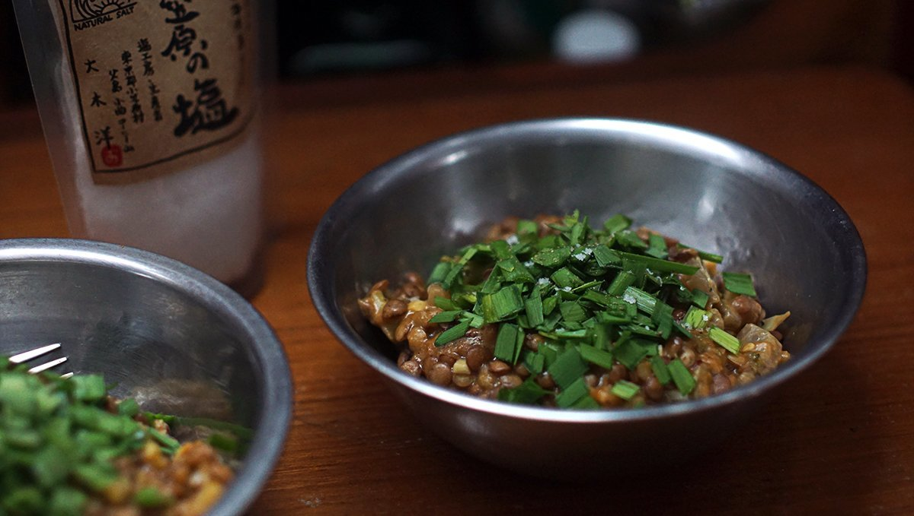

sweet and sour lentils
2 servings — 30 minutes
In my galley I have a few recipes that I consider staples, that I'm always in the mood to eat. I usually rotate these throughout the week, adding maybe a new recipe or two to change things up. This sweet and sour lentils recipe is one of these, a favourite of ours.
You can eat the lentils as is, or scoop it up with crackers. Devine & I enjoy eating it wrapped in salad or cabbage leaves.
We've cooked sweet and sour lentils often on long passages, it's a simple one-pot meal. It's also my go-to recipe during pot lucks - even people who don't like lentils will enjoy it (I've never had any complaints, not yet).
Substitutions
It's a versatile recipe, so if I don't have any carrots or daikon I'll sometimes put brocoli or fresh green peas instead. For a heartier meal, adding sweet potatoes is also delicious. Sometimes, if I'm out of peanut butter I'll use tahini instead, the flavour is very similar and doesn't change much in the recipe (also nice for those with peanut allergies). This recipe only works with whole lentils, because there's still a bite to them, halved lentils will soften too much and the resulting texture won't be as pleasant.
Enjoy this humble, but delicious recipe.
recipes/sweet.and.sour.lentils.2.jpg
 soy sauce2 tbsp
soy sauce2 tbsp japanese rice vinegar2 tbsp
japanese rice vinegar2 tbsp chili pepper flakes2 tsp
chili pepper flakes2 tsp peanut butter1 tbsp
peanut butter1 tbsp maple syrup2 tbsp
maple syrup2 tbsp sesame oil1 tsp
sesame oil1 tsp garlic3 cloves, minced
garlic3 cloves, minced ginger root1", minced
ginger root1", minced arrowroot starch1 tbsp
arrowroot starch1 tbsp
sauce
- Mix all liquid ingredients together in a bowl, add 1 tbsp of peanut butter and stir until dissolved.
- Stir in 1 tbsp of arrowroot starch (to help thicken sauce).
- Add 2 tsp of chili pepper flakes, 3 minced garlic cloves and roughly 1 inch of minced ginger root.
 brown lentils1/2 cup
brown lentils1/2 cup vegetable bouillon1 1/2 cups
vegetable bouillon1 1/2 cups carrots1, cubed
carrots1, cubed daikon2", cubed
daikon2", cubed chives3 stalks
chives3 stalks salt1/4 tsp
salt1/4 tsp
lentils
- Rinse lentils. Transfer rinsed lentils to a pot and add 1 1/2 cups of vegetable bouillon.
- Bring water to a rapid simmer, then reduce heat to medium.
- Simmer uncovered. After 10 minutes add 1 cubed carrot and 2 inches of cubed daikon.
- Let mixture simmer for an additional 10-20 minutes, add extra water as needed.
- If lentils are tender, they are ready. Strain lentils and return to pot with 1/4 tsp of salt.
- Pour sauce onto lentils, mix well. Serve into two bowls with some chives. Eat wrapped in salad or cabbage leaves, or with crackers.